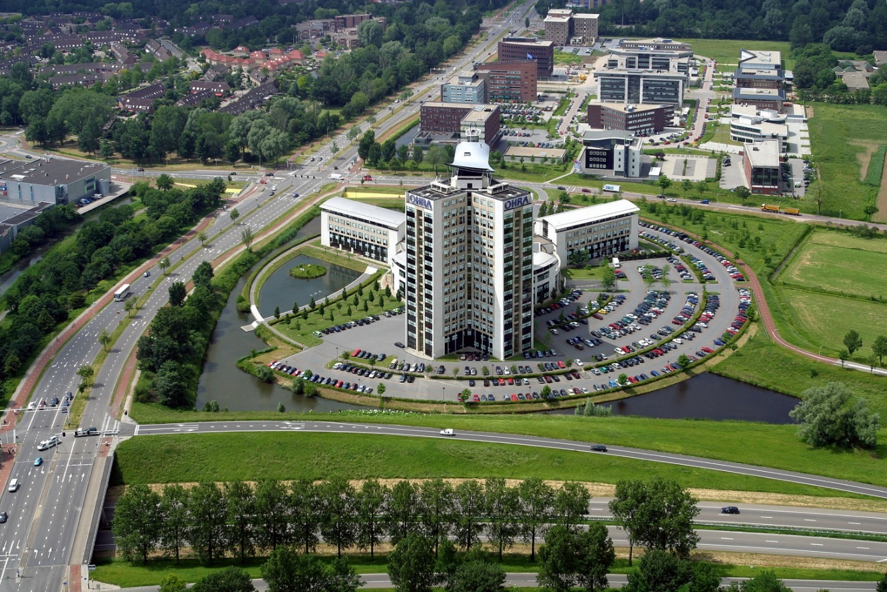
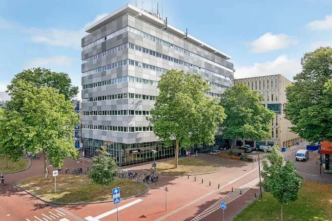

>70 M
Rivierstaete
De bestaande 18-keuzemomentencasus met woningbrand op hoogte, bruggenhoofd, liften, rook- en brandfenomenen en uitgebreide begrippenlijst.
Open casusDe eerdere Rivierstaete-casus blijft volledig beschikbaar. De nieuwe Arnhem Building-casus richt zich op bevelvoerder en manschappen bij brand op de 7e verdieping.

De bestaande 18-keuzemomentencasus met woningbrand op hoogte, bruggenhoofd, liften, rook- en brandfenomenen en uitgebreide begrippenlijst.
Open casus
Interactieve hoogbouwcasus voor bevelvoerder en manschappen. Informatie en omstandigheden ontwikkelen zich tijdens de oefening; niet alles is bij de start bekend.
Open casusBeide casussen gebruiken dezelfde begrippenlijst en dezelfde VGGM/BPBB-didactische laag. Bronmateriaal wordt als onderlegger en verwijzing gebruikt; de casussen zijn conceptueel en geen vastgesteld VGGM-inzetprotocol.
Scan de QR-code om de Hoogbouwcasus direct te openen op Windows, Android, iPhone of iPad.
https://mmuldersvggm.github.io/Hoogbouw-casus/